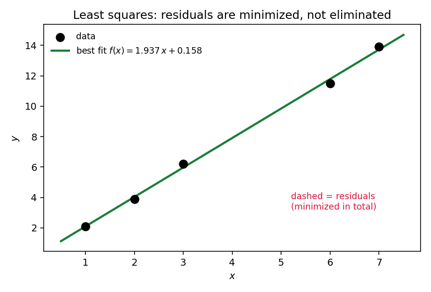
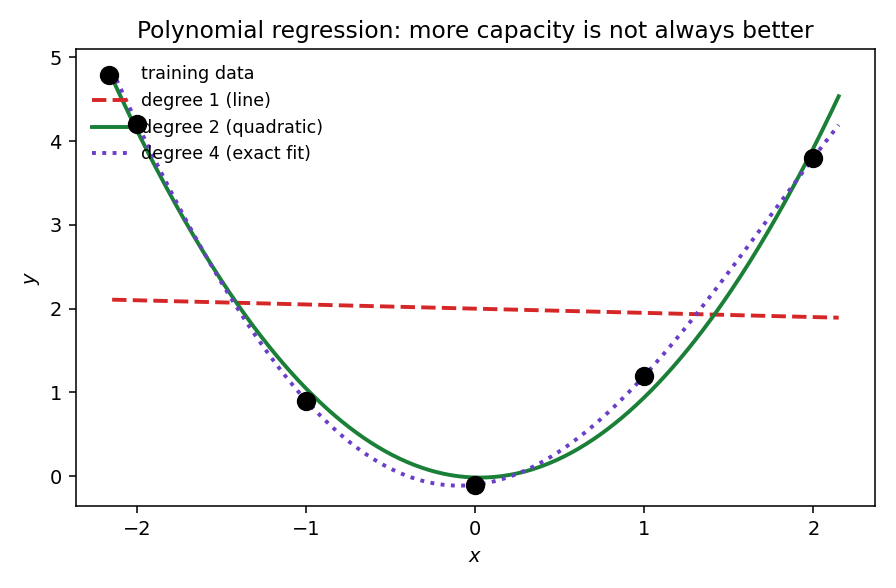

23. Linear and polynomial regression
Chapter 22 promised (§22.14): Chapter 23 finds the best regression model over all linear (and polynomial) models — not by comparing two hand-picked candidates, but by solving for the optimum over the entire infinite collection. This chapter is that solution. Everything here comes from the MLF Week 4 lecture “Linear and Polynomial Regression” (Prof. Prashanth L A, IIT Madras). The lecture’s headline idea: solving linear regression by taking derivatives gives exactly the system of equations you would get by projecting onto the column space — §5.8’s two routes to the normal equations, now wearing ML clothes. Polynomial regression turns out to need no new machinery at all: transform the features, then run the same machine.
23.1 The setup: data, model, loss
Data. \(\{(x^1, y^1), (x^2, y^2), \ldots, (x^n, y^n)\}\) with \(x^i \in \mathbb{R}^d\), \(y^i \in \mathbb{R}\). The superscript indexes the data point, the subscript (when needed) the coordinate — §22.6’s convention, kept through Part III.
Model. A linear function of the input: \[\boxed{f_\theta(x) = \theta^T x}, \qquad \theta \in \mathbb{R}^d.\] The parameters \(\theta\) are what the learning algorithm chooses (§22.5).
Note (where is the bias \(b\)?). Chapter 22 wrote the model as \(\mathbf{w}^T\mathbf{x} + b\). The lecture folds \(b\) into \(\theta\): append a constant coordinate \(1\) to every \(x\) (so \(x = (1, x_1, \ldots, x_{d-1})^T\)), and \(b\) becomes \(\theta_0\) (0-based indexing, used throughout this chapter). It is the same model — an intercept feature is just a feature that never changes.
Loss. The squared-error objective the lecture minimizes: \[\boxed{L(\theta) = \frac{1}{2}\sum_{i=1}^{n}\big(\theta^T x^i - y^i\big)^2}.\]
Note (the \(\tfrac12\) vs the \(\tfrac1n\)). Chapter 22 wrote the loss as \(\frac1n\sum(\cdot)^2\); Sejal’s lecture notes and the deck write \(\frac12\sum(\cdot)^2\). The constant in front is a bookkeeping choice — \(\tfrac12\) cancels the \(2\) that differentiation produces — and it never changes the minimizer: \(\arg\min \frac12\sum = \arg\min \frac1n\sum\). The learning algorithm picks the model, not the number.
Basically, … “How far is the line’s prediction from each answer? Square each miss, add up. Find the line with the smallest total.” That is the entire regression problem — §22.8’s curve-fitting, now with a plan to find the best curve.
23.2 The feature matrix
Stack the data into a matrix and the bookkeeping collapses. Def (feature matrix). \(A\) is the \(n \times d\) matrix whose rows are the data points as row vectors: \[\boxed{A = \begin{pmatrix} (x^1)^T \\ (x^2)^T \\ \vdots \\ (x^n)^T \end{pmatrix}, \qquad Y = \begin{pmatrix} y^1 \\ y^2 \\ \vdots \\ y^n \end{pmatrix}}.\] The lecture calls \(A\) the feature matrix; \(Y\) is the target vector.
- \(A\theta\) = all predictions at once. Row \(i\) of \(A\theta\) is \((x^i)^T\theta = \theta^T x^i = f_\theta(x^i)\).
- \(A\theta - Y\) = all residuals at once. A vector of the \(n\) misses.
- The loss, in one line: \[\boxed{L(\theta) = \frac{1}{2}(A\theta - Y)^T(A\theta - Y) = \frac{1}{2}\|A\theta - Y\|^2}.\]
Basically, … \(A\) is the data table, \(Y\) the answer column. Multiply the table by the parameters to get predictions; subtract the answers to get the misses; the loss is half the squared length of the miss vector.
23.3 Deriving the normal equations (the calculus route)
To minimize \(L\): set the gradient to zero (§10.1’s recipe). Write the loss with matrix entries: \[L(\theta) = \frac{1}{2}\sum_{i=1}^{n}\left(\sum_{j=1}^{d}A_{ij}\theta_j - y^i\right)^2.\] The partial derivative in \(\theta_k\) (chain rule; the \(\tfrac12\) cancels the \(2\)): \[\frac{\partial L}{\partial\theta_k} = \sum_{i=1}^{n}\underbrace{\left(\sum_{j=1}^{d}A_{ij}\theta_j - y^i\right)}_{\text{residual } i}\cdot \underbrace{A_{ik}}_{\text{column } k} = \sum_{i=1}^{n}A_{ik}\,(A\theta - Y)_i = \big[A^T(A\theta - Y)\big]_k.\] So the gradient is \[\boxed{\nabla_\theta L = A^T(A\theta - Y)}.\] Setting it to zero and rearranging: \[\boxed{A^TA\,\theta = A^TY} \qquad \text{(the \textbf{normal equations})}.\] These are \(d\) equations in the \(d\) unknowns \(\theta\) — the lecture’s entire linear-regression training step in one line.
Note (why this is a minimum, not just a stationary point). The Hessian is \(\nabla^2 L = A^TA\). For any \(z\): \[z^T(A^TA)z = (Az)^T(Az) = \|Az\|^2 \ge 0,\] so the Hessian is positive semidefinite (§10.8’s interrogation). A convex quadratic’s stationary point is its global minimum (§12.9) — the normal equations don’t just find a candidate, they find the optimum.
Basically, … Differentiate the total miss, set to zero, and the equations tidy themselves into \(A^TA\,\theta = A^TY\). The \(d\times d\) system on the left is all the data, compressed into one matrix.
23.4 The same equations from projections
This is the lecture’s headline, and §5.8 already proved the mechanism:
- Calculus route (§23.3): differentiate \(L\), set \(\nabla L = 0\) → \(A^TA\theta = A^TY\).
- Geometric route (§5.7): the predictions \(\mathbf{p} = A\hat\theta\) are the closest point of the column space \(C(A)\) to \(Y\) — i.e. the orthogonal projection of \(Y\) onto \(C(A)\). The error \(Y - A\hat\theta\) is orthogonal to \(C(A)\), which forces \(A^T(Y - A\hat\theta) = 0\) — the same equations.
The lecture’s point. Two completely different arguments — “minimize the squared miss” and “drop \(Y\) perpendicularly onto the column space” — land on the identical system. Least squares is projection; the ML loss is the geometry of §5.
Basically, … “The best prediction vector is the shadow \(Y\) casts on the column space” and “the parameters with the smallest squared error” are the same sentence in two languages.
23.5 The closed-form solution and the full-rank condition
If \(A\) has full column rank (independent columns — §4.6), then \(A^TA\) is invertible and the normal equations have one solution: \[\boxed{\hat\theta = (A^TA)^{-1}A^TY}.\]
Why full rank of \(A\) ⇒ invertibility of \(A^TA\) (the lecture’s homework hint, worked out). It is enough to show the two matrices have the same null space (§4.7):
- \(Ax = 0 \;\Rightarrow\; A^TAx = A^T0 = 0\). Trivial direction: \(N(A) \subseteq N(A^TA)\).
- \(A^TAx = 0 \;\Rightarrow\; x^TA^TAx = 0 \;\Rightarrow\; (Ax)^T(Ax) = \|Ax\|^2 = 0 \;\Rightarrow\; Ax = 0\). So \(N(A^TA) \subseteq N(A)\).
Same null space ⇒ same rank (rank–nullity, §4.8). If \(A\) has full column rank \(d\), then \(A^TA\) is a \(d\times d\) matrix of rank \(d\) — hence invertible.
Note (dependent columns). If \(A\)’s columns are dependent, the normal equations still have solutions — but infinitely many (§5.8 said the same): there are many least-squares \(\hat\theta\), and the closed form breaks because \((A^TA)^{-1}\) doesn’t exist. §23.10 shows the lecture’s fix.
Basically, … If every feature says something new (independent columns), there is exactly one best \(\theta\), given by one matrix inverse. If two features say the same thing, credit can’t be split uniquely — no single answer.
23.6 Why squared loss is right: the Gaussian-noise story
Why square the misses — why not absolute values, or something else? The lecture gives the probabilistic answer (the full machinery is §20.8; here is the meaning).
The generative model. Suppose nature produces labels as \[\boxed{y = \theta^Tx + \varepsilon}, \qquad \varepsilon \sim N(0,\, 1/\beta),\] i.e. the truth is linear, plus Gaussian noise with precision \(\beta\) (precision = \(1\)/variance). The data \(\{(x^i, y^i)\}\) are drawn independently from this model. Maximum likelihood asks: which \(\theta\) makes the observed data most probable? The log-likelihood (dropping \(\theta\)-free constants): \[\ell(\theta) = -\frac{\beta}{2}\sum_{i=1}^{n}\big(y^i - \theta^Tx^i\big)^2 + \text{const}.\] Maximizing \(\ell(\theta)\) = minimizing \(\frac{\beta}{2}\sum(y^i - \theta^Tx^i)^2\) = minimizing the least-squares objective of §23.1 (the \(\beta/2\) is another harmless constant).
The lecture’s message. “Least squares regression solves a maximum likelihood estimation problem under a linear model.” The noise model chooses the loss: Gaussian noise ⇒ squared error. This is §20.8 made concrete — the bridge from Part II’s probability to Part III’s algorithms.
Basically, … If you believe the errors are bell-curved, squared error isn’t an arbitrary choice — it’s exactly what “the most likely explanation” works out to be.
23.7 Worked example set
eg 1 (the normal equations on §22.8’s data — beating both hand-picked candidates). Data (with intercept feature): \((x^1,y^1) = (1,2.1)\), \((2,3.9)\), \((3,6.2)\), \((6,11.5)\), \((7,13.9)\). Chapter 22 compared \(f(x) = 2x\) (\(L = 0.064\)) with \(g(x) = x + 3\) (\(L = 5.264\)) — both guesses. Now solve over all lines \(f(x) = \theta_0 + \theta_1x\).
Step 1 — build \(A, Y\): \[A = \begin{pmatrix} 1 & 1 \\ 1 & 2 \\ 1 & 3 \\ 1 & 6 \\ 1 & 7 \end{pmatrix}, \qquad Y = \begin{pmatrix} 2.1 \\ 3.9 \\ 6.2 \\ 11.5 \\ 13.9 \end{pmatrix}.\]
Step 2 — compress into the normal equations: \[A^TA = \begin{pmatrix} 5 & 19 \\ 19 & 99 \end{pmatrix}, \qquad A^TY = \begin{pmatrix} 37.6 \\ 194.8 \end{pmatrix}.\] (Check a couple of entries: \((A^TA)_{22} = 1+4+9+36+49 = 99\) ✓; \((A^TY)_2 = 2.1 + 2(3.9) + 3(6.2) + 6(11.5) + 7(13.9) = 2.1+7.8+18.6+69+97.3 = 194.8\) ✓.)
Step 3 — invert. \(\det(A^TA) = 5\cdot 99 - 19^2 = 495 - 361 = 134 \ne 0\) — the columns are independent, so the solution is unique (§23.5): \[(A^TA)^{-1} = \frac{1}{134}\begin{pmatrix} 99 & -19 \\ -19 & 5 \end{pmatrix}, \qquad \hat\theta = \frac{1}{134}\begin{pmatrix} 99(37.6) - 19(194.8) \\ -19(37.6) + 5(194.8) \end{pmatrix} = \frac{1}{134}\begin{pmatrix} 21.2 \\ 259.6 \end{pmatrix}.\] \[\boxed{\hat\theta_0 \approx 0.158,\quad \hat\theta_1 \approx 1.937} \qquad \text{best line: } f(x) = 1.937x + 0.158.\]
Step 4 — verify it wins. Predictions: \(2.0955,\ 4.0328,\ 5.9701,\ 11.7821,\ 13.7194\). Residuals (pred − \(y\)): \(-0.0045,\ 0.1328,\ -0.2299,\ 0.2821,\ -0.1806\). Squared sum \(= 0.1827\); in §22.8’s \(\tfrac1n\) convention: \[L(\hat\theta) = \frac{0.1827}{5} \approx \boxed{0.0365} < 0.064 = L(f = 2x).\] The algorithm didn’t pick between two candidates — it searched the whole infinite collection and found something strictly better than both.

eg 2 (invertible vs singular \(A^TA\)). (i) \(A = \begin{pmatrix} 1&1 \\ 1&2 \\ 1&3 \end{pmatrix}\): columns independent, \[A^TA = \begin{pmatrix} 3 & 6 \\ 6 & 14 \end{pmatrix}, \quad \det = 42 - 36 = 6 \ne 0 \;\Rightarrow\; (A^TA)^{-1} \text{ exists}.\] (ii) \(B = \begin{pmatrix} 1&2 \\ 1&2 \\ 1&2 \end{pmatrix}\): column 2 \(= 2 \times\) column 1 (the “feature” says nothing new), \[B^TB = \begin{pmatrix} 3 & 6 \\ 6 & 12 \end{pmatrix}, \quad \det = 36 - 36 = 0 \;\Rightarrow\; \text{no inverse}.\] In (ii) the normal equations still have infinitely many solutions — every \(\theta\) with \(\theta_0 + 2\theta_1\) fixed gives the same predictions — but no unique \(\hat\theta\).
eg 3 (quadratic regression by hand). Fit a degree-2 polynomial through \((0,1)\), \((1,3)\), \((2,7)\). Transformed features (§23.8): \(\phi(x) = (1, x, x^2)^T\): \[A = \begin{pmatrix} 1 & 0 & 0 \\ 1 & 1 & 1 \\ 1 & 2 & 4 \end{pmatrix}, \qquad Y = \begin{pmatrix} 1 \\ 3 \\ 7 \end{pmatrix}.\] Normal equations: \[A^TA = \begin{pmatrix} 3 & 3 & 5 \\ 3 & 5 & 9 \\ 5 & 9 & 17 \end{pmatrix}, \qquad A^TY = \begin{pmatrix} 11 \\ 17 \\ 31 \end{pmatrix}, \quad\text{i.e.}\quad \begin{cases} 3\theta_0+3\theta_1+5\theta_2 = 11 \\ 3\theta_0+5\theta_1+9\theta_2 = 17 \\ 5\theta_0+9\theta_1+17\theta_2 = 31 \end{cases}.\] \(A\) is full rank (Vandermonde in disguise — distinct \(x\)’s), so try \(\hat\theta = (1,1,1)^T\): \(3+3+5 = 11\) ✓; \(3+5+9 = 17\) ✓; \(5+9+17 = 31\) ✓. Unique solution: \(\boxed{\hat y = 1 + x + x^2}\) — and indeed \(1+0+0 = 1\), \(1+1+1 = 3\), \(1+2+4 = 7\): the parabola threads all three points, residuals \(0\). Note. With \(m = n-1\) (degree 2, three points), the polynomial can hit every point exactly — training error \(0\). Whether that’s good is §23.9’s question.
eg 4 (the degree ladder: train error falls, test error bends). Five training points near \(y = x^2\) (mild noise): \(x = (-2,-1,0,1,2)\), \(y = (4.2, 0.9, -0.1, 1.2, 3.8)\). Three held-out test points: \((-1.5, 2.3)\), \((0.5, 0.3)\), \((1.5, 2.2)\). Fit polynomials of degree \(m = 1, 2, 4\) (§23.8’s machine):
| degree \(m\) | train MSE | test MSE |
|---|---|---|
| 1 | 2.863 | 0.977 |
| 2 | 0.0229 | 0.0030 |
| 4 | 0.0000 | 0.0191 |
Read it: \(m = 1\) can’t bend (underfits — high train and test error). \(m = 2\) nails the true shape (test error \(0.0030\) — best). \(m = 4\) has 5 parameters for 5 points, so it interpolates the training data exactly (train error \(0\)) — yet its test error is worse than \(m = 2\)’s: it wiggled between the training points to fit the noise. This is the overfitting curve; §23.9 turns it into a discipline.
23.8 Polynomial regression: curved fits with the same machine
The lecture’s generalization of last week’s line fitting: instead of a line, fit a degree-\(m\) polynomial.
Data. Now one-dimensional: \(\{(x^1, y^1), \ldots, (x^n, y^n)\}\), \(x^i, y^i \in \mathbb{R}\).
Def (transformed features). For each input, build the vector of its powers: \[\boxed{\phi(x) = \begin{pmatrix} 1 \\ x \\ x^2 \\ \vdots \\ x^m \end{pmatrix}}, \qquad \hat y(x) = \theta^T\phi(x) = \sum_{j=0}^{m}\theta_j x^j, \quad \theta = (\theta_0, \ldots, \theta_m)^T.\]
The procedure. Assemble \(\tilde A\) with rows \(\phi(x^i)^T\) (same \(Y\) as before) and solve the same normal equations: \[\boxed{\tilde A^T\tilde A\,\theta = \tilde A^TY}.\] “The only difference with respect to regular linear regression,” the lecture says, “is that we are transforming the features and then performing regression.” No new derivation is needed — §23.3’s algebra never assumed the features were raw.
Note (“linear” = linear in \(\theta\)). A parabola is curved in \(x\) but linear in the parameters \((\theta_0, \theta_1, \theta_2)\) — and least squares only ever sees the parameters. That is why the same machine fits curves.
Basically, … Want a parabola? Square your \(x\)’s yourself, hand the lecture’s machine the features \([1, x, x^2]\), and it fits the “line” in that taller space. Polynomial regression is linear regression in disguise.
23.9 More capacity is not always better: overfitting, and the validation discipline
Eg 4’s table is the whole story in miniature. Raising the degree \(m\) always can lower the training error (a degree-4 polynomial contains every degree-2 one as a special case — set the extra \(\theta_j\) to \(0\)). But:
- Training error is optimistic. The \(m = 4\) curve scored \(0.0000\) on the data it was fitted to and \(0.0191\) on data it wasn’t — the same trap as §22.10’s memorizer, now wearing a polynomial costume.
- Too simple is also bad. \(m = 1\) underfits: it can’t express the U-shape, so even its training error (\(2.863\)) is poor. Capacity too low ⇒ underfitting; capacity too high ⇒ overfitting.
- The discipline (§22.10). Fit each degree on the training data, compare degrees on held-out validation data, report the winner’s error on a third split — the test data. Choosing the degree is model selection: §22.10’s job (ii) — picking the collection, not the parameters. Eg 4’s verdict: \(m = 2\) wins on the held-out data — here that data plays the validation role (\(0.0030\)); a real deployment would then report on a third, untouched test split.

Note (the lecture’s hint). The lecture mentions overfitting only to motivate its closing remark (§23.10): the regularization parameter \(\lambda\) “controls overfitting — too small \(\lambda\) could lead to a lot of overfitting, too large \(\lambda\) leads to underfitting.” There are two cures for an over-ambitious polynomial: choose a smaller \(m\) by validation (this section), or penalize large parameters directly (§23.10). The full story of the second cure is Chapter 28.
Basically, … “The degree-4 curve aced the practice exam and flunked the real one.” Bigger model ≠ better model — judge capacity on data the model never saw during fitting.
23.10 The lecture’s remark: ridge regularization (a pointer)
The lecture ends with “a very short remark” — ridge regression — kept short here too, because it is Chapter 28’s subject. Instead of the plain least-squares objective, minimize the regularized version: \[\boxed{\bar L(\theta) = \frac{1}{2}\sum_{i=1}^{n}\big((x^i)^T\theta - y^i\big)^2 + \lambda\|\theta\|^2}, \qquad \lambda > 0.\] The extra term penalizes large parameters. Repeating §23.3’s derivation, the gradient picks up \(2\lambda\theta\), so stationarity gives \((A^TA + 2\lambda I)\theta_{\text{reg}} = A^TY\) — and since \(\lambda > 0\) is just a constant, absorbing the \(2\) into it recovers the lecture’s compact form: \[\boxed{(A^TA + \lambda I)\,\theta_{\text{reg}} = A^TY}, \qquad \hat\theta_{\text{reg}} = (A^TA + \lambda I)^{-1}A^TY.\] Homework (the lecture’s). Show \(A^TA + \lambda I\) is invertible even when \(A\) is not full rank: for \(\lambda > 0\) and \(z \ne 0\), \[z^T(A^TA + \lambda I)z = \|Az\|^2 + \lambda\|z\|^2 > 0,\] so the matrix is positive definite, hence invertible. The \(\lambda I\) term is a purely algebraic fix — it guarantees a unique answer — that also happens to be the overfitting cure the lecture promises. Small \(\lambda\) ⇒ near-ordinary least squares (overfitting risk stays); large \(\lambda\) ⇒ parameters squeezed toward \(0\) (underfitting). How to pick \(\lambda\) in practice — by validation, §23.9’s discipline — and the lasso cousin belong to Chapter 28.
Basically, … Add a penalty for big weights, and two things happen at once: the equations always have a unique solution, and the model stops chasing noise. The dial \(\lambda\) trades overfitting against underfitting.
23.11 Where this goes next
- Projections return. The geometric reading of §23.4 — predictions as projections onto \(C(A)\) — is the seed of Chapter 24 (PCA): there the “column space” is learned, not given.
- Regularization, properly. Chapter 28 takes §23.10’s remark and makes it a subject: ridge and lasso, the bias–variance trade-off, and choosing \(\lambda\) by validation.
- The iterative alternative. Forming \(A^TA\) costs \(O(nd^2)\) and inverting it \(O(d^3)\) — for enormous data that is too slow. Chapter 10 (§10.7, §10.9) gives the scalable route: gradient descent walks downhill on \(L(\theta)\) directly, no inverse needed. Same optimum (§23.3’s convexity guarantees it), different engine.
- The atom of the neuron. \(f_\theta(x) = \theta^Tx\) is the linear core inside every artificial neuron of Chapter 41 — this chapter is where the pattern “parameters × features, chosen by minimizing a loss” first appears in full.
Problem set
For the 1-D data \((x^1,y^1) = (1,3)\), \((2,5)\), \((4,9)\) with an intercept feature: (i) write \(A\) and \(Y\); (ii) for \(\theta = (1,2)^T\) (intercept \(1\), slope \(2\)), compute \(A\theta\) and \(A\theta - Y\); (iii) evaluate \(L(\theta) = \frac12\|A\theta - Y\|^2\). What does your answer say about the fit?
Scalar derivation (the lecture’s 1-D case). \(L(w, b) = \frac12\sum_{i=1}^n(wx^i + b - y^i)^2\). Compute \(\partial L/\partial w\) and \(\partial L/\partial b\) by hand, set both to zero, and show the result is the \(2\times 2\) case of the normal equations.
Lecture homework, the hard direction: prove that if \(A^TAx = 0\) then \(Ax = 0\) (hence \(N(A^TA) \subseteq N(A)\)). Hint: multiply by \(x^T\).
Fit the best line \(f(x) = \theta_0 + \theta_1x\) through \((0,0)\), \((1,2)\), \((2,3)\) via the normal equations, showing all steps. Compute the minimum squared error \(\|A\hat\theta - Y\|^2\).
Show the normal-equation solution is a global minimizer of \(L\): (i) compute the Hessian \(\nabla^2 L\); (ii) show it is positive semidefinite; (iii) conclude with §12.9.
Fit a quadratic \(\hat y = \theta_0 + \theta_1x + \theta_2x^2\) through \((0,2)\), \((1,1)\), \((2,2)\): (i) write \(\tilde A\) and \(Y\); (ii) write the \(3\times 3\) normal equations; (iii) solve them (verify your answer satisfies all three equations); (iv) explain why the residual is exactly \(0\).
True or false, with one-line justification: (i) \(A^TA\) is always symmetric. (ii) Full column rank of \(A\) guarantees a unique \(\hat\theta\). (iii) Raising the polynomial degree never increases the training error. (iv) Raising the polynomial degree never increases the test error.
For each \(A\), say whether \((A^TA)^{-1}\) exists and give the ML reason: (i) \(\begin{pmatrix} 1&1 \\ 1&2 \\ 1&3 \end{pmatrix}\); (ii) \(\begin{pmatrix} 1&2&2 \\ 1&3&3 \\ 1&4&4 \end{pmatrix}\) (features: intercept, \(x\), and a copy of \(x\)); (iii) \(\begin{pmatrix} 1&0 \\ 2&0 \\ 3&0 \end{pmatrix}\) (features: \(x\), and an always-\(0\) feature).
A colleague fits polynomials of degree \(1\)–\(4\) and reports:
\(m\) train MSE validation MSE 1 2.90 1.00 2 0.05 0.01 3 0.02 0.03 4 0.00 0.09 - Which degree should she pick, and on what data was that decision made? (ii) What phenomenon does \(m = 4\) display? (iii) If she must quote one number as “the model’s error” to a user, which split’s number should it be, and why (§22.10)?
Guided MLE→least squares (§20.8, §23.6). Data generated as \(y^i = \theta^Tx^i + \varepsilon^i\) with \(\varepsilon^i \sim N(0,\sigma^2)\) i.i.d. (i) Write the likelihood \(L(\theta)\) as a product of Gaussian densities. (ii) Take the log and drop \(\theta\)-free terms. (iii) Show the maximizer equals \(\arg\min_\theta \sum_i (y^i - \theta^Tx^i)^2\).
Solutions
Attempt each problem first, then click a problem to reveal its worked solution.
1. (i) Rows \((1, x^i)\): \[A = \begin{pmatrix} 1 & 1 \\ 1 & 2 \\ 1 & 4 \end{pmatrix}, \qquad Y = \begin{pmatrix} 3 \\ 5 \\ 9 \end{pmatrix}.\] (ii) \(A\theta = \begin{pmatrix} 1+2(1) \\ 1+2(2) \\ 1+2(4) \end{pmatrix} = \begin{pmatrix} 3 \\ 5 \\ 9 \end{pmatrix} = Y\), so \(A\theta - Y = (0,0,0)^T\). (iii) \(L(\theta) = \tfrac12\|0\|^2 = \boxed{0}\). The line \(f(x) = 2x + 1\) passes exactly through all three points — the consistent case (§5.8): no least squares needed, the loss is already at its floor.
2. Differentiate term by term: \[\frac{\partial L}{\partial w} = \sum_{i=1}^{n}(wx^i + b - y^i)\cdot x^i, \qquad \frac{\partial L}{\partial b} = \sum_{i=1}^{n}(wx^i + b - y^i)\cdot 1.\] Set both to zero: \[\sum_i x^i(wx^i + b) = \sum_i x^iy^i, \qquad \sum_i (wx^i + b) = \sum_i y^i.\] With \(A = \begin{pmatrix} 1 & x^1 \\ \vdots & \vdots \\ 1 & x^n \end{pmatrix}\) and \(\theta = (b, w)^T\), these are exactly \[A^TA\theta = A^TY: \quad \begin{pmatrix} n & \sum x^i \\ \sum x^i & \sum (x^i)^2 \end{pmatrix}\!\begin{pmatrix} b \\ w \end{pmatrix} = \begin{pmatrix} \sum y^i \\ \sum x^iy^i \end{pmatrix},\] the \(2\times 2\) normal equations. (Check: \((A^TA)_{11} = n\), \((A^TA)_{12} = \sum x^i\), \((A^TA)_{22} = \sum (x^i)^2\); \((A^TY)_1 = \sum y^i\), \((A^TY)_2 = \sum x^iy^i\) ✓.)
3. Assume \(A^TAx = 0\). Multiply on the left by \(x^T\): \[0 = x^T(A^TAx) = (x^TA^T)(Ax) = (Ax)^T(Ax) = \|Ax\|^2.\] A vector of length \(0\) is the zero vector, so \(Ax = 0\). Hence every \(x\) killed by \(A^TA\) is killed by \(A\): \(N(A^TA) \subseteq N(A)\). (The reverse inclusion is immediate: \(Ax = 0 \Rightarrow A^TAx = A^T0 = 0\).) The two null spaces are equal, so by rank–nullity (§4.8) \(A\) and \(A^TA\) have the same rank.
4. \[A = \begin{pmatrix} 1 & 0 \\ 1 & 1 \\ 1 & 2 \end{pmatrix}, \quad Y = \begin{pmatrix} 0 \\ 2 \\ 3 \end{pmatrix}, \quad A^TA = \begin{pmatrix} 3 & 3 \\ 3 & 5 \end{pmatrix}, \quad A^TY = \begin{pmatrix} 5 \\ 8 \end{pmatrix}.\] \(\det(A^TA) = 15 - 9 = 6 \ne 0\) (independent columns — §23.5): \[\hat\theta = \frac{1}{6}\begin{pmatrix} 5 & -3 \\ -3 & 3 \end{pmatrix}\!\begin{pmatrix} 5 \\ 8 \end{pmatrix} = \frac{1}{6}\begin{pmatrix} 25-24 \\ -15+24 \end{pmatrix} = \begin{pmatrix} 1/6 \\ 3/2 \end{pmatrix}.\] \[\boxed{f(x) = \tfrac32x + \tfrac16}.\] Predictions: \(\tfrac16, \tfrac{10}{6}, \tfrac{19}{6}\); residuals (pred − \(y\)): \(\tfrac16, -\tfrac13, \tfrac16\). Minimum squared error: \[\|A\hat\theta - Y\|^2 = \frac{1}{36} + \frac{4}{36} + \frac{1}{36} = \frac{6}{36} = \boxed{\frac16}.\] (And \(Y \notin C(A)\) — no line hits all three points — so this is genuinely the least-squares compromise, §5.8.)
5. (i) From §23.3, \(\nabla L = A^T(A\theta - Y)\), which is linear in \(\theta\); differentiating once more: \[\nabla^2 L = A^TA.\] (ii) For any \(z\): \(z^T(A^TA)z = (Az)^T(Az) = \|Az\|^2 \ge 0\) — positive semidefinite, so \(L\) is convex (§12.7’s second-order test). (iii) A stationary point of a convex function is a global minimum (§12.9): the \(\hat\theta\) solving the normal equations minimizes \(L\) over all of \(\mathbb{R}^d\).
6. (i) \[\tilde A = \begin{pmatrix} 1 & 0 & 0 \\ 1 & 1 & 1 \\ 1 & 2 & 4 \end{pmatrix}, \qquad Y = \begin{pmatrix} 2 \\ 1 \\ 2 \end{pmatrix}.\] (ii) \(\tilde A^T\tilde A = \begin{pmatrix} 3&3&5 \\ 3&5&9 \\ 5&9&17 \end{pmatrix}\), \(\tilde A^TY = \begin{pmatrix} 5 \\ 5 \\ 9 \end{pmatrix}\) (sums: \(2+1+2 = 5\); \(0+1+4 = 5\); \(0+1+8 = 9\)): \[\begin{cases} 3\theta_0+3\theta_1+5\theta_2 = 5 \\ 3\theta_0+5\theta_1+9\theta_2 = 5 \\ 5\theta_0+9\theta_1+17\theta_2 = 9 \end{cases}.\] (iii) Try \(\theta = (2,-2,1)^T\): \(6-6+5 = 5\) ✓; \(6-10+9 = 5\) ✓; \(10-18+17 = 9\) ✓. \(\tilde A\) has distinct \(x\)’s (Vandermonde — full rank), so the solution is unique: \(\boxed{\hat y = 2 - 2x + x^2}\). Check on the data: \(2-0+0 = 2\) ✓; \(2-2+1 = 1\) ✓; \(2-4+4 = 2\) ✓. (iv) Three parameters, three points, full-rank design matrix — the quadratic interpolates exactly (eg 3’s lesson): \(m = n-1\) can always thread every point, so the residual is \(0\). (Whether that’s wise is §23.9’s question.)
7. (i) True: \((A^TA)^T = A^T(A^T)^T = A^TA\). (ii) True: full column rank ⇒ \(A^TA\) invertible (§23.5) ⇒ exactly one \(\hat\theta\). (iii) True: the degree-\(m\) family contains the degree-\((m-1)\) family (pad extra \(\theta_j = 0\)), and minimizing over a bigger set can’t give a bigger minimum. (iv) False: eg 4 — test MSE rose \(0.0030 \to 0.0191\) from \(m = 2\) to \(m = 4\). That’s overfitting.
8. (i) \(A^TA = \begin{pmatrix} 3&6 \\ 6&14 \end{pmatrix}\), \(\det = 42-36 = 6 \ne 0\) — exists. ML reading: intercept and \(x\) are independent features; both coefficients are pinned down. (ii) \(A^TA = \begin{pmatrix} 3&9&9 \\ 9&29&29 \\ 9&29&29 \end{pmatrix}\) — columns 2 and 3 identical, rank \(\le 2 < 3\), singular — no inverse. ML reading: the “feature” was duplicated; the model can’t decide how to split credit between \(\theta_2\) and \(\theta_3\) (any shift \(\theta_2 \to \theta_2 + t\), \(\theta_3 \to \theta_3 - t\) gives identical predictions). (iii) \(A^TA = \begin{pmatrix} 14&0 \\ 0&0 \end{pmatrix}\), \(\det = 0\) — no inverse. ML reading: the always-\(0\) feature contributes nothing to any prediction, so its coefficient is completely free.
9. (i) \(m = 2\) — decided on the validation MSE (\(0.01\), the smallest column-3 entry). The training column was only for fitting; the degree is model selection (§23.9). (ii) Overfitting: train MSE \(0.00\) (memorized) but validation MSE \(0.09\) (worst of the four). (iii) The test split’s number — on data untouched by both fitting and selection. The validation number is already optimistic (it chose the winner); §22.10’s three-way split exists exactly so the reported number is honest.
10. (i) Each \(y^i \mid x^i \sim N(\theta^Tx^i, \sigma^2)\), independent: \[L(\theta) = \prod_{i=1}^{n}\frac{1}{\sqrt{2\pi\sigma^2}}\exp\!\left(-\frac{(y^i - \theta^Tx^i)^2}{2\sigma^2}\right).\] (ii) \[\ell(\theta) = \log L(\theta) = -\frac{n}{2}\log(2\pi\sigma^2) - \frac{1}{2\sigma^2}\sum_{i=1}^{n}(y^i - \theta^Tx^i)^2.\] (iii) The first term doesn’t involve \(\theta\), and \(1/(2\sigma^2) > 0\), so \[\arg\max_\theta \ell(\theta) = \arg\min_\theta \sum_{i=1}^{n}(y^i - \theta^Tx^i)^2,\] the least-squares objective (§23.1). Maximum likelihood under Gaussian noise is least squares — §20.8’s result, §23.6’s meaning.